Депрессия - это серьезное психическое расстройство, которое характеризуется длительным чувством печали, отверженности, беспокойства, беспомощности или безнадежности. Люди, страдающие депрессией, могут потерять интерес к обычным ежедневным делам, работе, учебе и отношениям с другими людьми. Депрессия может быть вызвана разными факторами, включая генетические факторы, хронические стрессы, дисбаланс химических веществ в мозге и другие причины.
